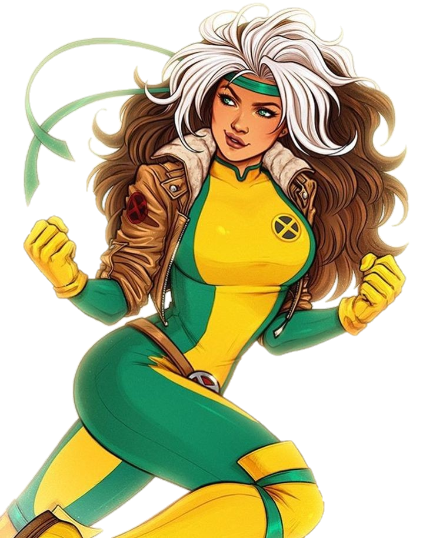

Rogue

BIO
The mutant known as Rogue has the uncontrollable ability of absorbing the energy of others through physical contact, temporarily incorporating their abilities, powers, memories and even personality with a touch, a process which wears her victims out. A runaway Rogue was found and adopted by mutant terrorists Mystique and Destiny. She had her abilities traumatically activated when she shared her first kiss with a boy and put him into a coma.[18] As part of Mystique's Brotherhood of Evil Mutants Rogue accidentally learned through Destiny that the super-heroine Ms. Marvel was destined to bring tragedy to their life. Deciding to secretly attack Ms. Marvel, Rogue unexpectedly absorbed her entire persona, permanently keeping not only her flight and super-strength powers but also her psyche.Gravely affected by this experience, Rogue had no choice but to seek help with Mystique's enemy, Professor Charles Xavier, founder and leader of the X-Men. Contrary to other members' disapproval, Xavier took Rogue in as part of the team
Full Name | Anna Marie LeBeau
Origin/Birthplace | Caldecott County, Mississippi
Allegiance | Good
Race | Human Mutant
POWER STATS
Intelligence | 85%
Strength | 65%
Speed | 82%
Durability |60%
Power | 80%
Combat Exp | 60%